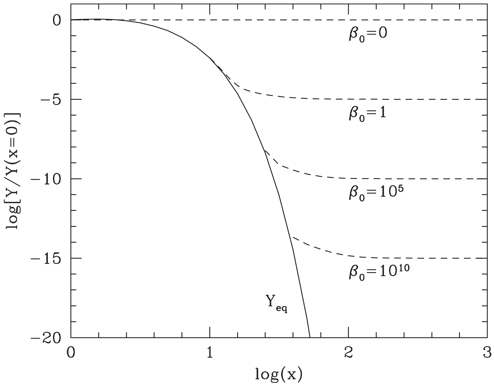
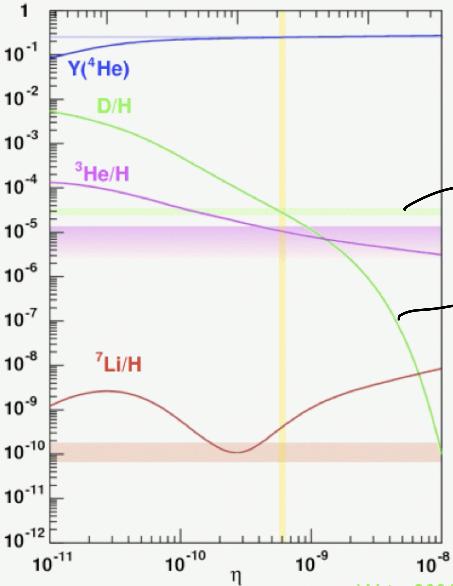
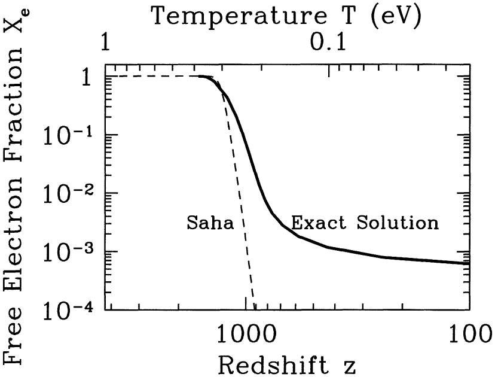
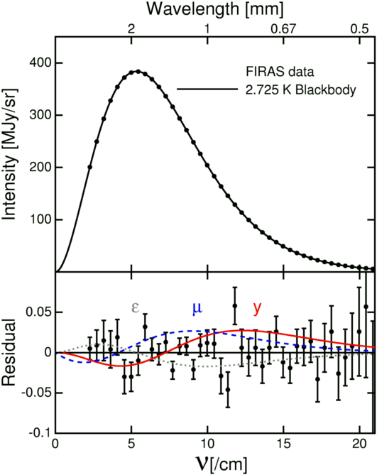
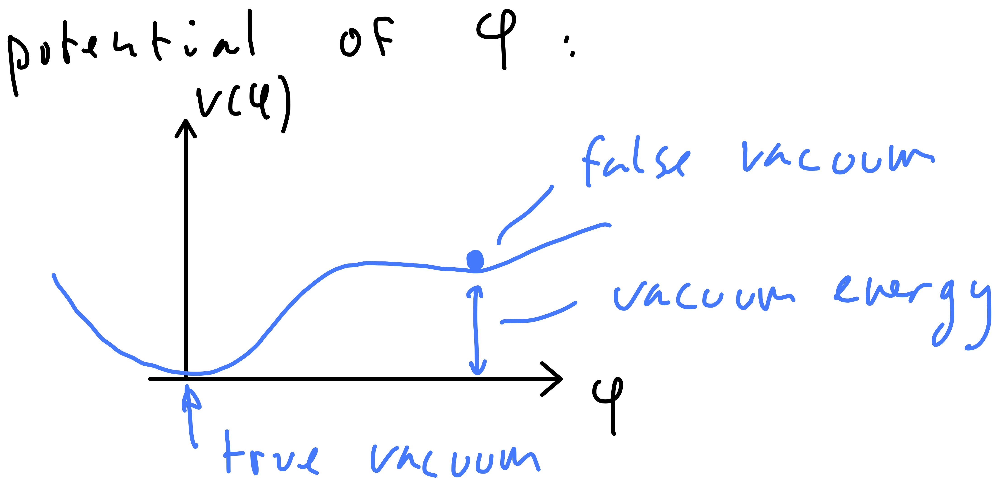

Source: https://github.com/thomabir/astrophysics-ii
The Cosmological principle states that the universe is homogeneous and isotropic on sufficiently large scales (larger than 100 ). This is a generalization of the Copernican principle, according to which there is no special place and no special direction in the universe.
In the following the evolution of the universe will be described, assuming that it is isotropic and homogeneous. Later local perturbations about this uniform background will be taken into account.
The theoretical basis of cosmology is General Relativity (GR). In contrary to Newton’s laws, where a body is attracted by another one. In GR gravity is seen as a manifestation of the curvature of space-time and this curvature leads among others to the observation that bodies attract each other. The curvature of space-time is described by a metric \(g_{\mu\nu}\) which describes the motion of distance on a curved space.
As an illustration we consider a two-dimensional space with a coordinate system \(x^\mu\), where \(\mu =\) 1, 2. The physical square distance is then \(ds^2 = g_{\mu\nu} \mathrm{d}x^{\mu}\mathrm{d}x^{\nu}\) where \(\mathrm{d}x^{\mu}\) and \(\mathrm{d}x^{\nu}\) are the coordinate distances. Assuming that the space is homogeneous and isotropic the distance can be written as \[\begin{aligned} ds^2 = a^2 (\frac{\mathrm{d}r^2}{1-kr^2} + r^2 \mathrm{d}\phi^2)\end{aligned}\] where \(k\) describes the curvature and \(a\) is the length scale known as the scale factor which can also be time-dependent. If the scale factor is time dependent this means that the surface is uniformly expanding or contracting. The curvature \(k\) for a homogeneous and isotropic surface is either \(k\) = 0 for a plane, \(k\) = 1 for a sphere or the curvature is negative \(k\) = -1 for a hyperbolic surface. In order to describe the sphere the coordinate transformation \(r\) = \(sin\chi\) is used and to describe the hyperbolic surface \(r\) = \(sinh\chi\).
The discussion of the two-dimensional space can be adapted to our universe, which is in four dimensional space-time described by the Minkowsky metric \(g_{\mu\nu} = \diag(1, -1, -1, -1)\). In this space time the physical square distance for a flat universe would be given by \(ds^2 = c^2\mathrm{d}t^2- (\mathrm{d}x^2 + \mathrm{d}y^2 + \mathrm{d}z^2)\). In general the dynamics of space-time is described by the Einstein field equations: \[\begin{aligned} G_{\mu\nu} = \frac{8\pi G}{\rho} T_{\mu\nu}.\end{aligned}\] \(G_{\mu\nu}\) is the Einstein tensor, which includes the curvature of the space-time. \(T_{\mu\nu}\) is the stress energy tensor and describes the content of the space-time. For an ideal fluid the stress energy tensor is \[\begin{aligned} T_{\mu\nu} = \diag(\rho c^2, p, p, p),\end{aligned}\] where \(\rho c^2\) is the energy density and \(p\) the pressure.
In the space-time the trajectories of particles are in geodesics which means they take the straightest paths possible. As an example for photons (massless particles) \(ds^2 = 0\).
The Friedmann-Robertson-Walker (FRW) metric is the metric of a homogeneous and isotropic universe: \[\begin{aligned} \dd{s}^2 = c^2 \dd{t}^2 - a(t)^2( \dd{\chi}^2 + r(\chi)^2 \dd{\Omega}^2 )\end{aligned}\]
\(\chi\): comoving radius
\(\dd{\Omega}^2 = \dd{\theta}^2 + \sin^2\theta \dd{\phi}^2\): solid angle element
\(a(t)\): scale factor
\(\displaystyle r(\chi) = f_K(\chi) = \begin{cases} \sin \chi & \text{closed case, positive curvature}\\ \chi & \text{flat case}\\ \sinh \chi & \text{open case, negative curvature} \end{cases}\)
Hubble parameter: \(H \mathrel{\vcenter{\baselineskip 0.5ex \lineskiplimit 0pt \hbox{\scriptsize.}\hbox{\scriptsize.}}}% =\dot{a}/a\)
today’s value gets a subscript zero: \(H_0\)
Because it is hard to measure \(H\) accurately, we write it as \[\begin{aligned} H_0 = 100 h \frac{\si{\km}}{\si{\s \mega\parsec}}, \end{aligned}\] where \(h \approx 0.7\) is the dimensionless Hubble parameter.
\(H_0^{-1} \approx \SI{10}{\giga\year}\) is about the age of the universe
\(c H_0^{-1} \approx \SI{4}{\giga \parsec}\) is about the size of the observable universe
The Friedmann equations are derived by plugging the FRW metric into Einstein’s equations: \[\begin{aligned} H^2 &= \frac{8 \pi G}{3} \rho - \frac{K c^2}{a^2}\\ \frac{\ddot{a}}{a} &= \frac{4 \pi G}{3} \left( \rho + \frac{3 p}{c^2} \right)\end{aligned}\]
The critical density is defined as \[\begin{aligned} \rho_\text{crit}(t) = \frac{3 H(t)^2}{8 \pi G}\end{aligned}\] Today, the critical density is about five hydrogen atoms per cubic metre, or one galaxy per .
Density parameters:
The subscript \(i\) describes one component of the universe (\(i =\) radiation, dark matter, matter )
density parameter: \(\Omega_i(t) = \rho_i(t)/\rho_\text{crit}(t)\)
total energy density: \(\rho(t) = \sum_{i} \rho_i(t)\)
total density parameter: \(\Omega(t) = \rho(t)/\rho_\text{crit}(t)\)
curvature density parameter: \(\Omega_{K,0} = 1 - \Omega_0 = - Kc^2/H_0^2 a_0^2\)
With these definitions, the (first) Friedmann equation can be rewritten as \[\begin{aligned} \frac{H}{H_0} = \sqrt{\frac{\rho}{\rho_{\text{crit}, 0}} + \Omega_{K,0} \left( \frac{a_0}{a} \right)^2 }\end{aligned}\]
To solve the Friedmann equation, \(\rho(t)\) or \(\rho(a)\) need to be known. It can be calculated as \[\begin{aligned} \rho = n \epsilon\end{aligned}\] where \(n\) is the particle number per unit volume and \(\epsilon\) the energy per particle
Relativistic matter. \(\epsilon\) is constant with \(a\), while \(n \propto a^{-3}\). Thus \(\rho \propto a^{-3}\).
Radiation. \(\epsilon = h \nu = h c / \lambda \propto a^{-1}\). Thus \(\rho \propto a^{-4}\).
Vacuum energy is constant in \(a\)
There is a generalization for general fluids:
equation of state: \(p = w p c^2\)
density: \(\rho \propto a^{-3(1+w)}\)
\(\displaystyle w = \begin{cases} 0 & \text{matter}\\ 1/3 & \text{radiation}\\ -1 & \text{vacuum energy} \end{cases}\)
The results can be plugged into the Friedmann equation: \[\begin{aligned} \frac{H}{H_0} &= \sqrt{\frac{\rho}{\rho_{\text{crit}, 0}} + \Omega_{K,0} \left( \frac{a_0}{a} \right)^2 }\\ &= \sqrt{ \Omega_{m,0} \left( \frac{a_0}{a} \right)^3 + \Omega_{r,0} \left( \frac{a_0}{a} \right)^4 + \Omega_{\Lambda,0} + \Omega_{K,0} \left( \frac{a_0}{a} \right)^2 }\end{aligned}\] This is a differential equation with \(\Omega_{i,0}\) as parameters.
The standard cosmological model:
\(\Omega_{m,0} \approx 0.3\)
\(\Omega_{r,0} \approx 10^{-5}\)
\(\Omega_{\Lambda,0} \approx 0.7\)
\(\Omega_{K,0} \approx 0\)
\(\Omega_0 \approx 1\)
\(h \approx 0.7\)
At different times, the universe is dominated by different components. Approximations:
Matter dominated: \[\begin{aligned} \frac{H}{H_0} = \sqrt{\Omega_{m,0} \left( \frac{a_0}{a}\right)^3} \implies a \propto t^{2/3} \end{aligned}\]
Radiation dominated: \[\begin{aligned} \frac{H}{H_0} = \sqrt{\Omega_{r,0} \left( \frac{a_0}{a} \right)^4} \implies a \propto t^{1/2} \end{aligned}\]
\(\Lambda\) dominated: \[\begin{aligned} \frac{H}{H_0} \propto \text{constant} \implies a \propto e^{H t} \end{aligned}\]
General fluid \((w \neq -1)\): \[\begin{aligned} \rho \propto a^{-3(1+w)} \implies a \propto t^{\frac{2}{3(1+w)}} \end{aligned}\]
The comoving distance \(\chi\) and the proper distance \(a \chi\) to a source are not directly observable. However, the angular size \(\theta\) and the flux \(F\) of an object can be measured directly.
Intrinsic properties of the source:
its size \(D\)
its luminosity \(L\)
Properties of space-time:
the comoving distance to the source \(\chi\)
the proper distance to the source \(a(t) \chi\)
Measurable quantities for an observer:
the angular size \(\theta\)
the flux \(F\)
In Euclidean space, the following relations hold: \[\begin{aligned} \theta &= \frac{D}{d} & F &= \frac{L}{4 \pi d^2}\end{aligned}\] where \(d\) is the distance to the source. In FRW-space, we define the following:
the angular-diameter distance \(d_A\) satisfies \(\theta = D/d_A\). One can show \(d_A = a r(\chi)\)
the luminosity distance \(d_L\) satisfies \(F = L/4\pi d_L^2\). One can show that \(d_L = r(\chi)/a\)
We measured the redshift of a photon that has travelled to us on a radial trajectory. How far away (in comoving distance) is the source? \[\begin{aligned} 0 &= \dd{s}^2 &&\text{photon}\\ &= c \dd{t}^2 - a(t)^2 [\dd{\chi}^2 + r(\chi)^2 \dd{\Omega}^2] &&\text{FRW metric}\\ \implies c \dd{t} &= a(t) \dd{\chi} &&\dd{\Omega}^2 = 0 \text{ on a radial trajectory}\\ \implies \dd{\chi} &= \frac{c \dd{t}}{a(t)}\\ &= \frac{c \dd{a}}{a^2 H(a)} && H = \frac{\dot{a}}{a} \text{, so } \dd{t} = \frac{\dd{a}}{a H(a)}\\ \implies \chi(a) &= c \int_a^{a_0} \frac{\dd{a'}}{a'^2 H(a')} && \chi(a_0) = 0\end{aligned}\] \(H(a)\) has to be obtained from the Friedmann equations. As a result, we will get \(\chi(a,a_0)\). We can use \(a/a_0 = 1/(1+z)\) to get \(\chi(z,a_0)\). Since \(a_0\) can be defined arbitrarily (for example, \(a_0=1\)), we get \(\chi(z)\).
Suppose a (hypothetical, non-interacting) photon was emitted at the Big Bang. How far (in comoving distance) could it have travelled until now? This comoving distance is called the comoving horizon. We plug into the previous equation, with \(a=0\) at the start: \[\begin{aligned} \chi(a) &= c \int_0^{a_0} \frac{\dd{a'}}{a'^2 H(a')}\end{aligned}\]
How old is the universe? \[\begin{aligned} t_0 &= \int_0^{t_0} \dd{t}\\ &= \int_0^{a_0} \frac{\dd{a}}{a H(a)} && H(a) = \dot{a}/a\end{aligned}\] \(H(a)\) is again found from the Friedmann equation. With the standard cosmology, \(t_0 \approx \SI{14}{\giga\year}\).
According to the Big Bang paradigm, the universe was once hot and dense, and now it expands and cools down. Today, it is far from thermal equilibrium, but it must have been in thermal equilibrium at some point in the past if it continuously expands.
A system is in thermal equilibrium if \(\Gamma \gg H\)
\(\Gamma = \text{interactions}/\text{time}\) is the interaction rate
\(H = \dot{a}/a\) is the Hubble constant
Similarly, a system is in thermal equilibrium if \(\tau_\Gamma \ll \tau_H\)
\(\tau_\Gamma = 1/\Gamma\) is the characteristic timescale of interactions
\(\tau_H = 1/H\) is the characteristic timescale of expansion
We already know about \(H\). \(\Gamma\) is defined as \[\begin{aligned} \Gamma = n v \sigma\end{aligned}\]
\(n \quad\) number density, \(\text{particles}/\text{volume}\)
\(v \quad\) velocity of particles
\(\sigma \quad\) scattering cross-section, has units of area.
At early times, \(\Gamma \gg H\). Particles are in thermal equilibrium with the plasma and coupled to photons. This scenario will be treated in 1.8.1.
At later times \(\Gamma \ll H\). Particles are not in thermal equilibrium and are decoupled from photons. See 1.8.2
The decoupling or “freeze out” happens when \(\Gamma \approx H\). This transition is described by the Boltzmann equation in 1.8.3.
In [tab:thermal-history] and [fig:evolution], an overview of the thermal history of the universe is given.
m10cmllp2cm Event & time & redshift & energy temp.
A phase of extremely rapid exponential expansion, caused by a phase transitions where the inflaton field emerged. Inflation explains properties of the universe which are difficult to account for without.
& ? & ? & ?
Baryons (protons, neutrons) are formed from quarks. Weirdly, there are way more baryons formed than antibaryons. This is the matter-antimatter asymmetry.
& ? & ? & ?
The universe has cooled sufficiently such that hadrons (baryons and mesons) can form.
& e-5 s & & 200 MeV 3e12 K
Pions annihilate and decay, the only hadrons left are nucleons (protons and neutrons). & e-4 s & & 50 MeV e12 K
Dark Matter interacts very weakly with ordinary matter, so it decouples early on.
& ? & ? & ?
Electrons and positrons annihilate through \(e^+ + e^- \to 2 \gamma\). Since the number of charged particles decreases, neutrinos decouple.
& 4 s & & 0.3 MeV 5e9 K
Light nuclei such as D and He get synthesized. They are still ionized.
& 3 min & & 0.08 MeV e9 K
& 6e4 & & 0.75 eV 8700 K
Formation of neutral atoms through \(e^- + p^+ \to H + \gamma\)
& 2e5 & & 0.34 eV 4000 K
The number density of charged particles has decreased enough for photons to decouple. These photons form the CMB.
& & &
Stars form and re-ionize hydrogen.
& 2e8 & & 4 meV 50 K
& 9 G & & 0.33 meV 3.8 K
& 13.8 G & & 0.24 eV 2.7 K
To describe the evolution of the universe quantitatively, a few definitions are required:
The probability that a particle is in a volume \(\dd{^3 x} \dd{^3 p}\) at time \(t\) is given by the (phase space) distribution function: \[\begin{aligned} f(\symbf{x}, \symbf{p}, t) \dd{^3 x} \dd{^3 p} \end{aligned}\] In a homogeneous and isotropic universe, we have \(f(\symbf{x}, \symbf{p}, t) = f(p, t)\).
The number of particles per unit volume is given by the number density: \[\begin{aligned} n(t) = 4\pi \int f(p,t) p^2 \dd{p} \end{aligned}\]
The energy per unit volume is given by the energy density: \[\begin{aligned} \rho(t) = 4 \pi \int E(p) f(p,t) p^2 \dd{p}, \end{aligned}\] with \(E(p) = \sqrt{p^2 + m^2}\).
The pressure is given by \[\begin{aligned} P(t) = 4 \pi c^2 \int \frac{p^2}{3 E(p)} f(p,t) p^2 \dd{p} \end{aligned}\] Since we work in natural units, we drop the \(c\).
The distribution function of particles in thermodynamic equilibrium is the Bose-Einstein or the Fermi-Dirac distribution: \[\begin{aligned} f_\text{eq}(p,t) = \frac{g}{(2\pi)^3} \left[ \exp\left( \frac{E(p)-\mu}{T} \pm 1 \right) \right]^{-1}\end{aligned}\]
\(+\) is for fermions and \(-\) for bosons
\(g\) is a spin degeneracy factor. Examples: \(g_\nu = 1\), \(g_\gamma = 2\), \(g_\text{quark} = 6\)
\(\mu\) is the chemical potential, which is the response of a thermodynamics system to a change of particle number. Usually, \(\mu=0\) for our purposes.
\(T\) is the temperature of the universe, which is time dependent.
For non-relativistic particles, \(T \ll m\) and \(E \approx m + p^2/2m\). Plugging this in yields \[\begin{aligned} n &= g \left( \frac{m T}{2 \pi} \right)^{3/2} \exp\left( \frac{p-m}{T} \right)& \rho &= n m& P &= n T\end{aligned}\]
For relativistic particles, \(T \gg m\) and \(E \approx p\). For both fermions and bosons, this yields \[\begin{aligned} n &= g T^3& \rho &= g T^4& P &= \frac{\rho}{3}\end{aligned}\] In the case of a relativistic gas, \(T \propto a^{-1}\), so \(n \propto a^{-3}\) and \(\rho \propto a^{-4}\). This is what we have already seen in 1.4.
The transition between non-equilibrium and equilibrium takes place at the decoupling time of freeze-out time \(t_f\). At \(t>t_f\), the transition function is \[\begin{aligned} f(p,t) = f\left( p \frac{a(t)}{a(t_f)}, t_f \right)\end{aligned}\] The shape of the function is “frozen in” at the freeze-out time \(t_f\).
For a relativistic particle, \[\begin{aligned} f(p,t) = \frac{g}{(2\pi)^3} \left[ \exp\left( \frac{p a(t)}{T_f a(t_f)} \pm 1 \right) \right]^{-1},\end{aligned}\] which is the same as for an equilibrium particle, but with \(T_f \mathrel{\vcenter{\baselineskip 0.5ex \lineskiplimit 0pt \hbox{\scriptsize.}\hbox{\scriptsize.}}}% =T_f a(t_f)/a(t)\).
The Boltzmann equation \[\begin{aligned} \dv{f_i}{t} = c_i[f_i]\end{aligned}\] describes the time evolution of the distribution function. \(c_i[f_i]\) is the collision term.
\(f\) only depends on \(p\) and \(t\), so we can write \[\begin{aligned} \dv{f_i}{t} &= \pdv{f_i}{t} + \pdv{f_i}{p} \pdv{p}{t}\end{aligned}\] The last term can be simplified. Because \(p = p_0 a^{-1}\), \(\dv*{p}{t} = -p_0 a^{-1} \dot{a} = - p H\). The Boltzmann equation then becomes \[\begin{aligned} \pdv{f_i}{t} - p H(t) \pdv{f_i}{p} &= c_i[f_i]\\ \implies \pdv{}{t} \int \dd{^3 p} f_i - H(t) \int \dd{^3 p} p \pdv{f_i}{p} &= \int \dd{^3 p} c_i[f_i]\\ \implies \dv{n_i}{t} + 3 H(t) n_i &= \int \dd{^3 p} c_i[f_i]\end{aligned}\] In the last line, we used partial integration. If the system is collisionless, \(c_i[f_i]=0\), and the solution of the Boltzmann equation is \(n_i \propto a^{-3}\). The \(3H(t) n_i\) is called the Hubble drag term.
We now look at reactions of the type \(i + j \leftrightarrow a + b\). The collision term is then of the form \[\begin{aligned} c_i[f_i] = \alpha(T) n_a n_b - \beta(T) n_i n_j\end{aligned}\]
\(\alpha(T)\) is the production rate
\(\beta(T)\) is the destruction rate
To simplify the equation, we make a few assumptions:
\(a\) and \(b\) are in equilibrium with a general plasma at temperature \(T\)
\(n_i = n_j\) (this is the case for antiparticles)
radiation era: \(a \propto t^{1/2} \propto T^{-1}\)
The equation is then \[\begin{aligned} \dv{n_i}{t} + 3 H(t) n_i = \beta(T) (n_{i, \text{eq}}^2 - n_i^2)\end{aligned}\] To analyse the equation, we define
\(x = m_i/T\) is used as a time variable
\(y_i = n_i/S\), where \(S\) is the entropy
\(\Gamma(x) = n_{i, \text{eq}}(x) \beta(x)\)
The equation is then \[\begin{aligned} \frac{x}{y_{i, \text{eq}}} \dv{y_i}{x} = - \frac{\Gamma(x)}{H(x)} \left[ \left( \frac{y_i}{y_{i,\text{eq}}} \right)^2 - 1 \right]\end{aligned}\] Initial conditions: \(x \ll 1\) at early times, so \(y_i = y_{i, \text{eq}}\).
No analytical solution is known. A set of numerical solutions is shown in [fig:boltzmann]

There are two types of relics:
Hot relics freeze out when the particles are still relativistic. Since \(x = m_i / T\), this means \(x_f \ll 1\)
Cold relics freeze out when the particles are already non-relativistic, with \(x_f \gg 1\)
Hot relics are still relativistic today, so their rest mass is \(m_i \ll T_0 = \SI{2.4e-4}{\eV}\). An example would be massless neutrinos.
The solution of the Boltzmann equation is \[\begin{aligned} \Omega_{i,0} h^2 &= \frac{ g_{i,\text{eff}} }{2} \left[ \frac{g_{*s}(x_0)}{g_{*s}(x_f)} \right]^{4/3} \Omega_{\gamma, 0} h^2 \end{aligned}\] The \(g\)’s are degeneracy factors and satisfy \(g_{*s}(x_0) \leq g_{*s}(x_f)\), and the photon density is \(\Omega_{\gamma,0} h^2 = \num{2.5e-5}\). It follows that \(\Omega_{i,0}\) is very small, which means that hot relic particles contribute very little to today’s energy density.
Next we consider weakly interacting massive particles (WIMPs). Examples are massive neutrinos and stable, light supersymmetric particles. WIMPs can either be hot (\(x_f \ll 1\)) or cold (\(x_f \gg 1\)).
The solution of the Boltzmann equation yields \[\begin{aligned} \Omega_{i,0} h^2 = \num{7.64e-2} \left( \frac{g_{i,\text{eff}}}{g_{*s}(x_f)} \right) \frac{m_i}{\si{\eV}}\end{aligned}\] Since we know that \(\Omega_{i,0} < 1\), we can get a constraint \(m_i < \SI{100}{\eV}\) on the mass of the hot WIMPs, which is possible for neutrinos. However, hot WIMPs are ruled out as dark matter by structure formation arguments.
Boltzmann says \[\begin{aligned} \Omega_{i,0} h^2 &= \begin{cases} 1.8 \left( \frac{m_i}{\si{\GeV}} \right)^{-2} \left[ 1 + 0.17 \ln\left( \frac{m_i}{\si{\GeV}} \right) \right] & \text{if } m_i < \SI{100}{\GeV}\\ \left( \frac{m_i}{\SI{3}{\TeV}} \right)^2 & \text{if } m_i > \SI{100}{\GeV} \end{cases}\end{aligned}\] To get \(\Omega_{i,0} < 1\), we need \(m_i\) to be between \(\SI{1.4}{\GeV}\) and \(\SI{3}{\TeV}\). Cold Wimps are good candidates for dark matter.
This is the epoch where protons and neutrons first combined to nuclei (not atoms) heavier than hydrogen. Heavier atoms can also be synthesized in stars through nuclear reactions, which has to be differentiated in observations.
Initially, the temperature is \(T < \SI{e13}{\kelvin}\) and the associated energy scale is \(k_B T \approx \SI{0.8}{\MeV}\). Protons and neutrons are in thermal equilibrium and interact weakly via the processes \(p + e \leftrightarrow n + \nu_e\) and \(n + \bar{e} \leftrightarrow p + \bar{\nu}_e\). Since the mass of the nucleons is around 940 MeV, they are already non-relativistic. The masses of neutrons and protons are slightly different, so their abundances after freeze out are different.
Once the temperature drops below 1 MeV, which is the binding energy of a typical nucleus, the nuclei start forming. A host of nuclear reactions can occur then: \[\begin{aligned} \ce{p + n &<=> \gamma{} + D} & \ce{D + n &<=> \gamma{} + ^3H} \\ \ce{D + D &<=> p + ^3H} & \ce{D + p &<=> \gamma{} + ^3He} \\ \ce{D + D &<=> n + ^3He} & \ce{^3H + p &<=> n + ^3He} \\ \ce{^3H &<=> e + \bar{\nu}_e + ^3He} & \ce{^3H + p &<=> \gamma{} + ^4He} \\ \ce{^3H + D &<=> n + ^4He} & \ce{^3He + n &<=> \gamma{} + ^4He} \\ \ce{^3He + D &<=> p + ^4He} & \ce{2 ^3He &<=> 2p + ^4He} \\ \ce{^7Li + p &<=> 2 ^4He} & \ce{^4He + ^3H &<=> \gamma{} + ^7Li} \\ \ce{^4He + ^3He &<=> \gamma{} + ^7Be} & \ce{^7Be + e &<=> \nu_e + ^7Li}\end{aligned}\] For each of these reactions, there is a Boltzmann equation which describes the evolution of the number densities. This coupled system of equations can be solved numerically to find the abundances of nuclei. The solution for a few nuclei is shown in [fig:nucleosynthesis].

As the universe cools down to a temperature that is lower than the binding energy of hydrogen (\(\SI{13.6}{\eV}\)), some hydrogen atoms start to form via the reaction \(p + e \to H + \gamma\). This epoch is called recombination, even though electrons and protons combine for the first time. Other atoms also start forming, but we only care about hydrogen for now.s
The ionization fraction \(x_e\) is the ratio between the number density of electrons and the number density of baryons (protons, hydrogen): \[\begin{aligned} x_e \mathrel{\vcenter{\baselineskip 0.5ex \lineskiplimit 0pt \hbox{\scriptsize.}\hbox{\scriptsize.}}}% =\frac{n_e}{n_b}\end{aligned}\] For given initial conditions, the ionization fraction can be calculated as a function of \(z\) by solving the Boltzmann equation, see [fig:ionization]

The time of recombination is defined as the time when there are ten times more baryons than electrons: \(x_e(z_\text{rec}) = 0.1\). This happens at a temperature of \(T_\text{rec} \approx \SI{0.3}{\eV}\) and a redshift of \(z \approx 1300\). Note that \(T_\text{rec}\) is smaller than the binding energy of hydrogen. This is because recombination is delayed by the high abundance of photons.
The interaction of electrons and photons (in the relevant energy regime) is described by Thomson scattering, with a scattering cross-section of \(\sigma_T = \SI{6.65e-25}{\cm\squared}\). The reaction rate is then (see 1.7) \[\begin{aligned} \Gamma_T = n_e \sigma_T c,\end{aligned}\] where \(n_e\) is the number density of electrons, and \(c\) the speed of photons. We know that strong coupling occurs as long as \(\Gamma_T \gg H\), so we define the moment of decoupling such that \[\begin{aligned} \Gamma_T(z_\text{dec}) = H(z_\text{dec})\end{aligned}\] This happens at \(z \approx 1100\), \(E \approx \SI{0.26}{\eV}\), and \(T \approx \SI{3000}{\kelvin}\), after the universe is 380000 old. Note that \(z_\text{dec} < z_\text{rec}\), so decoupling occurs soon after recombination.
After decoupling, the universe is transparent to photons. When an observer today stares into empty space, the photons he measures come from the surface of last scattering, where the photons interacted for the last time during decoupling. This is the cosmic microwave background (CMB), which has a temperature of \[\begin{aligned} T_\text{CMB} = T_\text{dec}\frac{a_0}{a_\text{dec}} \approx \SI{3}{\kelvin}\end{aligned}\] Measurements of the CMB show a blackbody spectrum with remarkably deviations of \(\Delta T / T \approx \num{e-5}\), as can be seen in [fig:cmb].

The ΛCDM model is a refinement of the Big Bang model, and it is the standard model of cosmology. Three observational pillars justify this model:
the expansion of the universe,
the big bang nucleosynthesis, and
the cosmic microwave background.
According to ΛCDM, the energy content of the universe today is made up of radiation, matter, dark matter, and dark energy. Their contributions today are:
Photons and neutrinos: \(\Omega_{\gamma,0} \approx \Omega_{\nu,0}/0.68 \approx \num{2.5e-5} h^{-2}\)
Baryons: \(\Omega_{b,0} \approx 0.05\)
Dark Matter: \(\Omega_{dm,0} \approx 0.25\)
Dark Energy: \(\Omega_\Lambda \approx 0.7\)
We now look at the constituents in more detail.
As radiation, we classify those particles that are still relativistic today. Accordingly, they need to have very low mass.
Most photons are part of the CMB and haven a temperature \(T\approx \SI{2.73}{\kelvin}\). They contribute only very little to the energy density: \(\Omega_{\gamma,0} = \num{2.5e-5}\).
Massless neutrinos contribute about the same as photons: \(\Omega_{\nu,0} = 0.68 \Omega_{\gamma,0} \approx \num{1.7e-5}\).
Baryons from the Big Bang nucleosynthesis contribute \(\Omega_b \approx 0.05\). They mostly occur in two forms:
Even though only ten percent of baryons are found in stars, they are the largest fraction of visible matter.
The rest of the baryons is in the form of various phases, such as cold gas, warm gas, and hot gas, both in the intergalactic and the interstellar medium.
Dark Matter contributes \(\Omega_\text{dm} \approx 0.25\). We know of its existence through its gravitational effects. There is evidence for dark matter in galaxies, galaxy clusters, large scale structure, and many others.
Dark matter is mostly non-baryonic, because baryons are constrained to \(\Omega_b \approx 0.05\) by Big Bang nucleosynthesis. Also, the structure formation constraints below rule out baryons as dark matter candidates.
Dark matter is cold (non-relativistic). It is thus called Cold Dark Matter (CDM)
It interacts very weakly, so we can approximate it as non-collisional.
A good candidate for dark matter are particles beyond the standard model, such as WIMPs.
Massive Compact Halo Objects (MACHOs), such as black holes, are not good candidates, since objects with masses from \(\num{e-6}\) to \(15\, M_\odot\) are ruled out.
Dark Energy contributes \(\Omega_\text{de} \approx 0.7\). It is needed to get a flat geometry for the universe, and to explain the recent acceleration of the expansion of the universe.
From the first Friedmann equation, we know that a constant energy density results in a scale factor \(a \propto e^{Ht}\) that is exponentially growing. Consider an effective fluid with equation of state \(p_\text{DE} = w \rho_\text{DE} c^2\). We demand \(\ddot{a} > 0\), and the second Friedmann equation then yields \(w < -1/3\).
There are a few possible candidates:
The cosmological constant \(\Lambda\) corresponds to \(w=-1\), independent of time.
A model called quintessence, which is a dynamical scalar field, would give rise to another form of energy. Since it is dynamical, you can map it to an effective fluid, with a \(w\) that varies in time.
There could be a theory of gravity that can improve upon or replace general relativity.
Current constraints demand \(w = -1\) with an uncertainty of about 5 %. The cosmological constant is thus a model that is consistent with observations, and it is part of the ΛCDM model.
In total, \(\Omega_0 \approx 1\), so the universe has a flat geometry. The exact nature of dark energy and dark matter are some of the most pressing questions in fundamental physics.
There are other ingredients to ΛCDM, such as the model of gravity and the choice of initial conditions. A process called inflation is also added, as we will see later.
The ΛCMD model is very successful to fit current observations, but there are some tensions that are starting to emerge with more detailed measurements from cosmological probes.
The ΛCDM model without inflation has a few intrinsic fundamental problems.
We have defined the particle horizon \[\begin{aligned} \chi_h(t) = \int_0^t \frac{c \dd{t'}}{a(t')},\end{aligned}\] which is the maximal comoving distance that a photon could have travelled from the big bang (\(t=0\)) until time \(t\). Let’s look at the size of the horizon at decoupling time, where photons scattered for the last time. This corresponds to a redshift \(z_\text{dec} \approx 1100\). The integral evaluates to \[\begin{aligned} \chi_h (t_\text{dec}) \approx 180 h^{-1} \, \si{\mega\parsec}\end{aligned}\] The corresponding CMB angular scale is \[\begin{aligned} \theta_h &= \frac{\chi_h(t_\text{dec})}{r(\chi_\text{dec})} \approx \SI{1.8}{\deg},\end{aligned}\] where \(r\) is the comoving angular diameter distance. This is unexpected, because the CMB is extremely homogeneous across the whole sky, even though the photons from different areas of the sky could not have been in causal contact when they scattered! Something must be wrong here.
We have observationally determined \(\Omega_0 \approx 1\), so we have a flat geometry. Let’s look at how \(\Omega\) varies with time. For this, we can use the Friemann equation: \[\begin{aligned} H(a)^2 = \frac{8\pi G}{3} \rho(a) - \frac{Kc^2}{a^2}\end{aligned}\] We look at the deviation of \(\Omega\) from \(1\): \[\begin{aligned} \frac{1 - \Omega(a)}{\Omega(a)} &= \Omega(a)^{-1} - 1\\ &= -\frac{3Kc^2}{8\pi G \rho(a)a^2}\\ &\propto \begin{cases} a^2 &\text{in the radiation era } \rho \propto a^{-4}\\ a & \text{in the matter era } \rho \propto a^{-3} \end{cases}\end{aligned}\] Consider time \(t_i\) in the radiation era. Then \[\begin{aligned} \frac{\Omega_i^{-1} - 1}{\Omega_0^{-1} - 1} &= \frac{\Omega_i^{-1} - 1}{\Omega_\text{eq}^{-1} -1} \frac{\Omega_\text{eq}^{-1}-1}{\Omega_0^{-1}-1}\\ &= \left( \frac{a_i}{a_\text{eq}} \right)^2 \left( \frac{a_\text{eq}}{a_0} \right)\\ &= \left( \frac{T_\text{eq}}{T_i} \right)^2 \frac{T_0}{T_\text{eq}} && T \propto a^{-1} \text{ for a relativistic gas}\end{aligned}\] We choose the Planck time as our starting point: \[\begin{aligned} t_\text{init} &= t_\text{Planck} \mathrel{\vcenter{\baselineskip 0.5ex \lineskiplimit 0pt \hbox{\scriptsize.}\hbox{\scriptsize.}}}% = \left( \frac{\hbar G}{c^5} \right)^{1/2}\\ T_\text{Planck} &= \SI{e32}{\kelvin}\\ T_0 &= \SI{3}{\kelvin}\\ T_\text{eq} &= \SI{e4}{\kelvin} \end{aligned}\] Then \[\begin{aligned} \frac{\Omega_\text{Planck}^{-1} - 1}{\Omega_0^{-1}-1} \approx \num{e-60}\end{aligned}\] This means that any deviation of \(\Omega\) from \(1\) at the Planck time has been amplified by \(60\) orders of magnitude until today. This is also called the fine tuning problem, which requires \(\Omega=1\) with extreme accuracy at early times. What is the physical explanation of this?
Consider \(T \approx \SI{e14}{\GeV}\), which was the case during the grand unification (GUT) epoch, where the fundamental forces were unified. At these temperatures, there is a phase transition. Before the transition, the forces are unified, and during the transition, there is a spontaneous symmetry breaking. A prediction for topological defects that happen during this transition requires that there should be magnetic monopoles with an enormous density \(\Omega_{\text{monopole},0} \approx \num{e11}\). If you still exist, this scenario is obviously ruled out by observations.
Today, even though the cosmological principle holds for large distance scales (a few 100 M), we still see many structures on various smaller scales in the universe. What were the “seeds”, the initial perturbations that are responsible for the creation of these structures?
All of these problems can be resolved by postulating very special and finely tuned initial conditions. These could arise from physics in the quantum gravity era. The benefit of the inflation model is that all these problems could be resolved without having to resort to quantum gravity.
Inflation is a possible solution for the disparities that we have seen in the previous section. We will tackle them one by one from here.
We define two things two reformulate the horizon problem:
The size of the forward light cone: \[\begin{aligned} \chi_f = \int_0 ^{t_\text{ls}} \frac{c \dd{t'}}{a(t')} \end{aligned}\]
The size of the past light cone: \[\begin{aligned} \chi_p = \int_{t_\text{ls}}^{t_0} \frac{c \dd{t'}}{a(t')} \end{aligned}\] This is the maximum comoving distance that photons could have travelled since last scattering.
The horizon problem can be stated mathematically as \(\chi_f' < \chi_p\): Regions which are observable today to have similar temperatures were apparently not in causal contact at last scattering. A solution is to increase \(\chi_f'\) through a period of accelerated expansion called inflation. A sketch of this is shown in [fig:inflation].
Let \(t_i\) and \(t_e\) be the start and end time of inflation, with \(\Delta t = t_e - t_i\). We know \[\begin{aligned} \chi_f = \chi_h(t_\text{ls}) = \int_0^{t_\text{ls}} \frac{c \dd{t'}}{a(t')}\end{aligned}\] For vacuum energy, we know that \(\rho_\text{vac}(a)\) is constant. We assume that, at early times, there was some kind of vacuum energy which gives us \[\begin{aligned} a \propto e^{Ht} \text{ with } H = \sqrt{8 \pi G \rho_\text{vac}/3} = \text{constant},\end{aligned}\] exactly like our derivations for the cosmological constant. The contribution to \(\chi_f\) during inflation is then \[\begin{aligned} \chi_f(t_i,t_e) &= \int_{t_i}^{t_e} \frac{c \dd{t'}}{a(t')}\\ &\propto \frac{1}{H a(t_e)} (e^{H \Delta t} - 1)\end{aligned}\] We see that \(\chi_f\) grows exponentially during inflation. For how long does inflation have to last to solve our problems? We need \(\Delta t > 60 H^{-1}\), or \(e^{H \Delta t} < \num{e25}\), if we assume \(t_e \approx t_\text{GUT}\). We thus require \(a_e/a_i > e^{60}\), or in other words, we need \(60\) “\(e\)-foldings”.
One can show that \[\begin{aligned} \frac{\Omega^{-1}(t_e)-1}{\Omega^{-1}(t_i)-1} = \frac{a(t_i)}{a(t_e)} < \num{e-52}\end{aligned}\] assuming \(60\) \(e\)-foldings. As a result, any curvature that was originally there gets flattened by inflation.
The monopoles are diluted by the expansion during inflation by a factor \[\begin{aligned} \left( \frac{a_e}{a_i} \right)^3 \approx \num{e78},\end{aligned}\] so the monopole density after inflation is practically zero.
As we will see later, inflation provides a mechanism to generate primordial fluctuations. Microscopic quantum fluctuations are turned into macroscopic classical fluctuations by the rapid expansion.
Inflation avoids having to set finely tuned initial conditions, since they will be diluted by the expansion. Quantum gravity is not required to solve this problem.
Inflation requires vacuum energy, which is realized as a scalar field \(\phi(\symbf{x}, t)\), called the inflaton. The potential of the scalar field is sketched in [fig:false-vacuum].

During inflation, \(\phi\) is in a false vacuum state at a local minimum or a flat part of the potential. During the end of inflation, \(\phi\) reaches the true vacuum state, which has a lower potential energy. This generates vacuum energy, which in turn drives accelerated expansion.
We impose a slow roll condition, which impedes the field from changing too quickly: \[\begin{aligned} \dot{\phi}^2 \ll V(\phi)\end{aligned}\] There are several models, some of which are old inflation, new inflation, and chaotic inflation. There are many other models proposed, indicating that inflation is still an ongoing field of research.
We now drop the assumption that the universe is homogeneous and isotropic. In this chapter, we analyse small perturbations about the background, which can be handled with linear perturbation theory. These perturbations will lead to the structures that we observe today.
We are going to make a few approximations:
The perturbations are sufficiently small to be treated by linear perturbation theory.
We ignore relativistic effects and use a Newtonian approximation.
There are several ways to model this structure.
First, we model the content of the universe as an expanding, self-gravitating, ideal fluid in the Newtonian approximation. We consider the following parameters:
density \(\rho(\symbf{x},t)\)
pressure \(p(\symbf{x},t)\)
velocity \(\symbf{u}(\symbf{x},t) = \dot{\symbf{r}}\)
gravitational potential \(\phi(\symbf{x},t)\)
The time evolution of these parameters is described by the fluid equations: \[\begin{aligned} \frac{\mathrm{D}\rho}{\mathrm{D}t} &= - \rho \symbf{\nabla}_r \cdot \symbf{u} && \text{continuity equation, conservation of mass}\\ \frac{\mathrm{D}\symbf{u}}{\mathrm{D}t} &= - \frac{\symbf{\nabla}_r p}{\rho} - \symbf{\nabla}_r \phi &&\text{acceleration} = \text{pressure force} + \text{gravitational force}\\ \laplacian_r \phi &= 4 \pi G \rho &&\text{Poisson equation}\end{aligned}\] We define the convective derivative \[\begin{aligned} \frac{\mathrm{D}}{\mathrm{D}t} = \pdv{}{t} + \symbf{u} \cdot \symbf{\nabla}_r,\end{aligned}\] which is the time derivative as one moves along fluid elements.
Let’s consider the case where the fluid is expanding. In order to describe this, we can write the position vector as \(\symbf{r} = a(t) \symbf{x}\), where \(\symbf{x}\) is a comoving coordinate. In the Newtonian treatment, we assume that the scale factor is a known input for the calculation. Then the (total) velocity is \[\begin{aligned} \symbf{u} = \dot{a}(t) \symbf{x} + \symbf{v},\end{aligned}\] where the first term is the Hubble expansion, and \(\symbf{v} = a \dot{\symbf{x}}\) is the peculiar velocity.
We write the density as \[\begin{aligned} \rho(\symbf{x},t) = \bar{\rho}(t) [1 + \delta(\symbf{x}, t)],\end{aligned}\] where \(\bar{\rho}(t) \propto a^{-3}\) is the mean background density, and \(\delta(\symbf{x}, t)\) is a small density perturbation.
We can plug these assumptions and definitions into the fluid equations to get \[\begin{aligned} \pdv{\delta}{t} + \frac{1}{a} \symbf{\nabla}\cdot[(1+\delta)\symbf{v}] &= 0\\ \pdv{\symbf{v}}{t} + \frac{\dot{a}}{a} \symbf{v} + \frac{1}{a} [\symbf{v} \cdot \symbf{\nabla}] \symbf{v} &= - \frac{\symbf{\nabla}\Phi}{a} - \frac{\symbf{\nabla}p}{a \bar{\rho}(1+\delta)}\\ \laplacian\Phi &= 4 \pi G \bar{\rho} a^2 \delta\end{aligned}\] where \[\begin{aligned} \Phi = \phi + \frac{1}{2} a \ddot{a} x^2 \end{aligned}\] and \(\symbf{\nabla}= \symbf{\nabla}_{\symbf{x}}\).
We have three equations in four unknowns, so we still need the equation of state, which relates pressure to other variables, such as density and entropy.
The first law of thermodynamics states that internal energy can either be added by the means of heat or work: \[\begin{aligned} \dd{U} = \dd{Q} + \dd{W}\end{aligned}\] We can use \(\dd{W} = - p \dd{V}\) and \(\dd{Q} = T \dd{S}\). From now on, we assume we are dealing with an ideal gas. The equation of state for an ideal gas is \[\begin{aligned} p &= n k_B T\\ &= \frac{\rho}{\mu m_p} k_B T\end{aligned}\] where \(\mu\) is the mean molecular weight and \(n = N/V\) is the number density. The internal energy is \[\begin{aligned} U &= \frac{3}{2} N k_B T\\ &= \frac{3}{2} \frac{\rho}{\mu m_p} V k_B T\end{aligned}\] Then \[\begin{aligned} \frac{\symbf{\nabla}p}{\bar{\rho}} &= \frac{1}{\bar{\rho}} \left[ \left( \pdv{p}{\rho} \right)_S \symbf{\nabla}\rho + \left( \pdv{p}{S} \right)_\rho \symbf{\nabla}S \right]\end{aligned}\] Let \(c_s^2 = (\pdv*{p}{\rho})_S\) be the adiabatic sound speed squared. Then we get \[\begin{aligned} \left( \pdv{p}{S} \right)_\rho = \frac{2}{3} \rho T\end{aligned}\] and thus \[\begin{aligned} \frac{\symbf{\nabla}p}{\bar{\rho}} &= c_s^2 \symbf{\nabla}\delta + \frac{2}{3} (1+\delta) T \symbf{\nabla}S\end{aligned}\] The Euler equation can then be rewritten as \[\begin{aligned} \pdv{\symbf{v}}{t} + \frac{\dot{a}}{a} \symbf{v} + \frac{1}{a} (\symbf{v} \cdot \symbf{\nabla}) \symbf{v} &= - \frac{\symbf{\nabla}\Phi}{a} - \frac{c_s^2}{a} \frac{\symbf{\nabla}\delta}{1 + \delta} - \frac{2T}{3a} \symbf{\nabla}S\end{aligned}\]
For small density perturbations \(\delta\) and small peculiar velocities \(\symbf{v}\), we can drop terms that are quadratic in these variables, such as \((\symbf{v} \cdot \symbf{\nabla}) \symbf{v}\). We get the linearized fluid equations: \[\begin{aligned} \pdv{\delta}{t} + \frac{1}{a} \symbf{\nabla}\cdot\symbf{v} &= 0\\ \pdv{\symbf{v}}{t} + \frac{\dot{a}}{a} \symbf{v} &= - \frac{\symbf{\nabla}\Phi}{a} - \frac{c_s^2}{a} \symbf{\nabla}\delta - \frac{2 \bar{T}}{3a} \symbf{\nabla}S\end{aligned}\] We can combine them to get a single equation. First, take the derivative of the continuity equation. Then, use the Euler equation and the Poisson equation to get the following: \[\begin{aligned} \pdv[2]{\delta}{t} + 2 \frac{\dot{a}}{a} \pdv{\delta}{t} &= 4 \pi G \bar{\rho} \delta + \frac{c_s^2}{a^2} \laplacian\delta + \frac{2}{3} \frac{\bar{T}}{a^2} \laplacian S\end{aligned}\] This is a second order differential equation. We take the Fourier transform: \[\begin{aligned} \delta(\symbf{x},t) &= \sum_{\symbf{k}} \delta_{\symbf{k}} \exp(i \symbf{k} \cdot \symbf{x})\\ \delta_{\symbf{k}}(t) &= \frac{1}{V} \int \delta(\symbf{x},t) \exp(-i \symbf{k} \cdot \symbf{x}) \dd{^3x},\end{aligned}\] where \(V\) is the volume of a sufficiently large box. The fluid equation then becomes \[\begin{aligned} \dv[2]{\delta_{\symbf{k}}}{t} + 2 \frac{\dot{a}}{a} \dv{\delta_{\symbf{k}}}{t} &= \left[4 \pi G \bar{\rho} - \frac{k^2 c_s^2}{a^2}\right] \delta_{\symbf{k}} - \frac{2}{3} k^2 \frac{\bar{T}}{a^2} S_{\symbf{k}}\end{aligned}\] The Poisson equation in Fourier space is \[\begin{aligned} - k^2 \Phi_{\symbf{k}} &= 4 \pi G \bar{\rho} a^2 \delta_{\symbf{k}}\end{aligned}\] The fluid equation can now be solved for every \(\symbf{k}\)-mode independently.
We need initial conditions to solve the fluid equation. There are two pressure terms, \(\delta_{\symbf{k}}\) and \(S_{\symbf{k}}\). We distinguish two types of initial conditions:
\(\delta \neq 0\), \(\delta S = 0\): isentropic or adiabatic or curvature perturbations
\(\delta = 0\), \(\delta S \neq 0\): isocurvature perturbations
Adiabatic perturbations are naturally generated by inflation, so we only consider those and set \(\delta S = 0\).
The fluid equation can now be simplified further: \[\begin{aligned} \dv[2]{\delta_{\symbf{k}}}{t} + 2 \frac{\dot{a}}{a} \dv{\delta_{\symbf{k}}}{t} &= \left[4 \pi G \bar{\rho} - \frac{k^2 c_s^2}{a^2}\right] \delta_{\symbf{k}}\end{aligned}\] Consider the case where the expansion of the fluid can be ignored, so \(a\) is a constant. Then \(\dot{a} = 0\), so a further term drops out: \[\begin{aligned} \dv[2]{\delta_{\symbf{k}}}{t} &= \left[4 \pi G \bar{\rho} - \frac{k^2 c_s^2}{a^2}\right] \delta_{\symbf{k}}\\ &= - \omega^2 \delta_{\symbf{k}}\end{aligned}\] This is simply the equation of motion of a harmonic oscillator. We can rewrite \[\begin{aligned} \omega^2 &= \left( \frac{c_s}{a} \right)^2 [k^2 - k_J^2]\end{aligned}\] where \(k_J\) is the Jeans wavenumber \[\begin{aligned} k_J = \frac{a}{c_s} \sqrt{4 \pi G \bar{\rho}}.\end{aligned}\] One can also define the Jeans wavelength \[\begin{aligned} \lambda_J = \frac{2 \pi a}{k_J},\end{aligned}\] and the Jeans mass \[\begin{aligned} M_J = \frac{\pi}{6} \bar{\rho} \lambda_J^3,\end{aligned}\] which is the mass of a sphere with a radius of \(\lambda_J/2\) and density \(\bar{\rho}\).
We first consider the case where \(k > k_J\), or equivalently \(\lambda < \lambda_J\), or \(M < M_J\). Then \(\omega^2 > 0\), and the equation of motion gives us an oscillatory solution: \[\begin{aligned} \delta_{\symbf{k}} \propto \exp(\pm i \omega t) \qquad \omega \in \mathbb{R}\end{aligned}\] This means that density perturbations don’t grow, but just oscillate.
When \(k < k_J\), the solution is \[\begin{aligned} \delta_{\symbf{k}} \propto \exp(\pm \alpha t) \qquad \alpha \in \mathbb{R},\end{aligned}\] which indicates exponentially decaying or growing modes. The growing modes lead to the growth of structure, which is called gravitational or Jeans instability. Once the perturbations become large, our assumptions are not valid any more, and we have to switch to non-linear perturbation theory.
The Jeans mass is \[\begin{aligned} M_J &= \frac{\pi}{6} \bar{\rho} \lambda_J^3\\ &= \frac{\pi^{5/2}}{6} \frac{c_s^3}{G^{3/2} \bar{\rho}^{1/2}}\end{aligned}\] Before recombination, photons and baryons are tightly coupled, and they act as a single fluid. We get \(M_J \approx \num{e16} (\Omega_{b,0}h^2)^{-2} M_\odot\), which means that no baryonic perturbations smaller than a supercluster can grow before recombination.
After recombination, the baryons and the photons are decoupled. They have much smaller pressure, and \(M_J \approx \num{e5} (\Omega_{b,0}h^2)^{-1/2} M_\odot\). Perturbations with masses larger than a globular cluster can grow.
We also have to take into account the expansion of the universe, which we neglected up to now. Furthermore, these results do not consider dark matter, but only baryons.
We now consider a collisionless gas, such as dark matter. In this case, there is no reason to impose thermodynamic equilibrium, not even locally. As a result, we cannot describe the gas with the thermodynamic variables we used before, since they are only defined in (at least local) thermodynamic equilibrium. We thus need to take one step back and consider distribution functions \(f(\symbf{x}, \symbf{p}, t)\), whose dynamics are given by the collisionless Boltzmann equation, \[\begin{aligned} \dv{f}{t} &= \pdv{f}{t} + \pdv{f}{p^i} \pdv{p^i}{t} + \pdv{f}{x^i} \pdv{x^i}{t}\\ &= 0.\end{aligned}\] As before, we can take the moments of the distribution functions: \[\begin{aligned} \langle Q \rangle = \frac{1}{n} \int \dd{^3p} Q f(\symbf{x}, \symbf{p}, t)\end{aligned}\] with the comoving number density \(n(\symbf{x}, t) = \int \dd{^3p} f(\symbf{x}, \symbf{p}, t)\). Some moments are:
The density \(\rho(\symbf{x}, t)\) can be obtained with \(Q = m\), where \(m\) is the mass of a particle.
The bulk velocity \(\langle v_i \rangle\) can be obtained with \(Q = v_i = p_i/(m n)\)
We take moments of the Boltzmann equation. One can show that one gets the same equations as the fluid equations: the continuity equation and the Euler equation, with the pressure gradient term replaced as follows: \[\begin{aligned} \frac{\symbf{\nabla}_i p}{\rho} \to \sum_{j=1}^3 \pdv{}{x_j} \left[ (1+\delta) \sigma_{ij}^2 \right]\end{aligned}\] where \[\begin{aligned} \sigma_{ij} = \left\langle v_i v_j \right\rangle - \left\langle v_i \right\rangle \left\langle v_j \right\rangle\end{aligned}\] The stress tensor is defined as \(\rho \sigma_{ij}^2\).
If the stress tensor is small, we get the fluid equations with \(\symbf{\nabla}p = 0\) and \(c_s^2=0\), so a pressureless fluid.
On small scales, the stress tensor can be important. The large random velocities of the particles can make these particles diffuse and dampen the perturbations. This phenomenon is called free streaming. This is not important for cold dark matter, but it is important for hot dark matter.
We assume adiabatic perturbations, neglect free streaming, and only consider cold dark matter. In the ideal fluid equations, we can set \(p=0\) and \(c_s^2 = 0\). We get \[\begin{aligned} \dv[2]{\delta_{\symbf{k}}}{t} + 2 \frac{\dot{a}}{a} \dv{\delta_{\symbf{k}}}{t} &= 4 \pi \bar{\rho}_m \delta_{\symbf{k}}\end{aligned}\] We consider solutions for an expanding universe and find the following solutions (homework):
The solution \(\delta_- \propto H(t)\) is decaying, since \(H\) becomes smaller over time.
The growing solution is \[\begin{aligned} \delta_+ \propto H(t) \int_0^t \frac{\dd{t'}}{a(t)^2 H(t')}, \end{aligned}\] which is a result of gravitational instability. This is similar to what we found before, but this time we did not neglect expansion. We define \(D(z) \propto \delta_+\) the linear growth factor.
Examples are shown in [fig:collisionless-gas].
Matter dominated case (\(\Omega_0 = \Omega_{m,0} = 1\)): \(a \propto t^{2/3}\) and \(H \propto t^{-1}\). This yields \[\begin{aligned} D \propto t^{2/3} \propto a \end{aligned}\]
OCDM (\(\Omega_{m,0} < 1\), \(\Omega_{\Lambda,0} = 0\)) and ΛCDM (\(\Omega_{m,0} + \Omega_{\Lambda,0} = 1\)): We get an analytical solution where \(D\) grows slower than \(a\). The faster expansion from ΛCDM slows down the growth of structure.
In the general case, there is no analytical solution. The growth factor usually grows slower than the exponential growth we found in the non-expanding gravitational instability case. In other words, the universe expansion slows down with the growth of structure.
Let’s look at how the gravitational potential grows, because we will need that result later. The Poisson equation in Fourier space is \[\begin{aligned} - k^2 \Phi_{\symbf{k}} = 4 \pi G \bar{\rho} \delta_{\symbf{k}},\end{aligned}\] which can be rearranged to \[\begin{aligned} \Phi_{\symbf{k}} &\propto a^2 \bar{\rho}_m \delta_{\symbf{k}}\\ &\propto a^2 a^{-3} D(a) \\ &\propto \frac{D(a)}{a}\end{aligned}\] This means that \(\Phi_{\symbf{k}}\) is constant in the matter dominated case, and \(\Phi_{\symbf{k}}\) decays in the OCDM and ΛCDM cases at late times.
We consider collisionless dark matter and collisionfull baryons. We assume that the pressureless dark matter dominates the matter density, so \(\rho_\text{tot} \approx \rho_\text{dm}\).
There are now two differential equations: \[\begin{aligned} \dv[2]{\delta_{\text{dm}, \symbf{k}}}{t} + 2 \frac{\dot{a}}{a} \dv{\delta_{\text{dm}, \symbf{k}}}{t} &= 4 \pi G \bar{\rho}_m \delta_{\text{dm}, \symbf{k}}\\ \dv[2]{\delta_{\text{b}, \symbf{k}}}{t} + 2 \frac{\dot{a}}{a} \dv{\delta_{\text{b}, \symbf{k}}}{t} + \frac{k^2 c_s^2}{a^2} \delta_{\text{b},\symbf{k}} &= 4 \pi G \bar{\rho}_m \delta_{\text{dm}, \symbf{k}}\end{aligned}\] The first equation is the same as in the previous section, because the low-density baryons don’t influence the dark matter much. To get analytical solutions, we assume that we are in the matter dominated case, and that \(c_s^2 a\) is constant.
Since the dark matter equation is the same, it has the same solution, with a growing mode \(D(t) \propto a\) in a matter dominated universe.
For the baryons \[\begin{aligned} \delta_{\text{b},\symbf{k}}(t) &= \frac{\delta_{\text{dm},\symbf{k}}(t)}{1 + (k/k_J)^2},\end{aligned}\] where \(k_J = a/c_s \sqrt{4 \pi G \bar{\rho}}\) is the Jeans wavenumber. From this equation, we see that the baryon perturbations are equal to the dark matter perturbations for small \(k\). For large \(k\), pressure becomes more important, and the baryon perturbations will be smaller.
We have just seen that baryon behaviour becomes a lot more interesting at smaller length scales, where pressure is higher. This leads to oscillations and damping of the amplitude of the perturbations. One can show that the baryon density of a given mode \(\symbf{k}\) oscillates like \[\begin{aligned} \delta_{\text{b},\symbf{k}} \propto \exp(\frac{i k c_s t}{a}) + \text{constant},\end{aligned}\] which corresponds to sound waves, which is why they are called acoustic oscillations.
Before recombination on small scales, the perturbations are damped by imperfect coupling between baryons and photons. This leads to diffusion of the photons, which suppresses perturbations on small scales. The effect is called collisional damping or Silk damping.
For a full treatment of cosmological perturbations, we need a relativistic treatment. We will only give a sketch of the formalism here.
The Einstein equations give the time evolution of space-time. The perturbed version of these equations is \[\begin{aligned} \bar{G}_{\mu\nu} + \delta G_{\mu\nu} = 8 \pi G (\bar{T}_{\mu\nu} + \delta T_{\mu\nu}),\end{aligned}\] where the variables with a bar are the background solutions from the FRW metric, and the \(\delta\)-terms are sufficiently small perturbations, so that we can treat them with linear perturbation theory.
In order to calculate \(G\), we need a metric, which we assume to be of the form \[\begin{aligned} g_{\mu \nu} = \bar{g}_{\mu\nu} + h_{\mu\nu},\end{aligned}\] where \(\bar{g}\) is the FRW metric, and \(h\) is a again a small perturbation. The perturbation \(h\) can again be decomposed, according to the behaviour of their components under coordinate changes.
Tensor perturbations correspond to gravitational waves, which are important for the polarization of the CMB. However, they are too small to have been detected directly from the CMB.
Vector perturbations are vorticity modes, which decay. They are thus not very important in cosmology.
Scalar perturbations can be thought of perturbations in the gravitational potential. They play a central role in structure formation, so we will focus solely on them.
The stress energy tensor can be related to the distribution function of different components \(i\) of the universe, \[\begin{aligned} T_{\mu\nu} &= \sum_{i} T^{i}_{\mu\nu}\\ T^{i}_{\mu\nu} &= \int \frac{\dd{^3p}}{(2\pi)^3 E} p_\mu p_\nu f^i(\symbf{x},\symbf{p},t),\end{aligned}\] where \(f\) can be found from the Boltzmann equation. The distribution function can also be spilt into a background and a small perturbation: \[\begin{aligned} f^i = \bar{f}^i + \delta f^i.\end{aligned}\] These species \(i\) are dark matter, baryons, photons, neutrinos, and potentials of the metric perturbations. We only consider scalar perturbations. All these species interact with each other:
All species interact with the metric.
Photons and electrons interact through Compton scattering.
Electrons and protons interact through Coulomb scattering.
Other forces, such as the weak interaction, are neglected, since they are too rare or weak.
The resulting set of linear differential equations are called the linearised Einstein-Boltzmann equations. They have no analytical solution in general, but there are analytical solutions in asymptotic limits.
For each \(\symbf{k}\) mode, the equations can be solved separately. There are several important scales:
\(k^{-1}\) is the comoving wavelength scale of the \(\symbf{k}\)-mode
\(\chi_h\) is the comoving horizon
\(a_\text{eq}\) is the scale factor at matter-radiation equality, or \(a_{\text{eq2}}\) at matter-dark energy equality
\(\chi_h(a_\text{eq})\) is the size of the horizon at matter-radiation equality
The solution of the Einstein-Boltzmann equations is the potential \(\Phi\), shown in [fig:asymptotic-behaviour]. We consider the evolution of a very large and a very small mode:
Large modes (\(k \ll k_\text{eq}\)) are constant in the radiation era. When entering the matter era, they lose about 10 % of their amplitude, but then remain constant.
Small modes (\(k\gg k_\text{eq}\)) decay in the radiation era, but remain constant in the matter era. In the dark energy era, they evolve as \(D(a)/a\), which we have already seen in the Newtonian treatment.
In summary, small modes are suppressed, while large modes stay mostly constant.
We can describe the transition from early times to the matter dominated era by a transfer function. We write the potential at late times (\(a \gg a_\text{eq}\)) as \[\begin{aligned} \Phi_k(a) = \frac{9}{10} \Phi_{p, k} T(k) \frac{D(a)}{a}\end{aligned}\]
\(\Phi_{p, k}\) is the primordial potential, which is the potential at initial conditions.
\(T(k)\) is the transfer functions, which obeys \(T \to 1\) as \(k \to 0\)
\(D(a)\) is the growth factor, normalized such that \(D(a) = a\) in the matter era.
The \(9/10\) factor is the large scale suppression which we have seen in the previous diagram.
The transfer function describes how much of the primordial potential is still left at a time corresponding to scale factor \(a\). The solution for different cases is shown in [fig:transfer-function].
At small \(k\), \(T = 1\) as required.
In the CDM model, \(T(k)\) is suppressed at \(k \gg k_\text{eq}\), as we have seen before. We find \(T(k) \propto (k/k_\text{eq})^2 \ln(k/k_\text{eq})\).
In the HDM model, the perturbations are damped strongly due to free streaming when \(k > k_\nu\).
In the baryon model, dark matter is made up of baryons, which is ruled out for different reasons, but we can still look at the solution. Here, two processes act in addition to \(k_\text{eq}^{-1}\) suppression:
Jeans instability for \(k > k_J\) inhabits growth, and instead leads to oscillations. We have seen these as oscillations in time at constant \(k\) before, while here they are shown as oscillations in \(k\) at constant time.
Silk damping.
As a result, \(T(k)\) is suppressed and oscillates on small scales.
In a mixed model, nothing very interesting happens.
In CDM + baryons (blue line), small oscillations occur around the CDM curve.
Inflation also gives a mechanism to generate primordial perturbations. Remember that we proposed an inflaton field \(\phi\), which is in a false vacuum configuration at the beginning, leading to vacuum energy. This drives an accelerated expansion. We required that the scale factor grew by \(a_e/a_i > e^{60}\) during inflation, so small features are blown up to macroscopic features. These act as the initial perturbations for formations of structure.
The quantum harmonic oscillator is described by the Hamiltonian \[\begin{aligned} H = \frac{p^2}{2m} + \frac{1}{2} m \omega^2 x^2,\end{aligned}\] which gives rise to equally spaced energy levels \[\begin{aligned} E_n = \frac{\hbar}{m \omega} \left( m + \frac{1}{2} \right),\end{aligned}\] for \(n \in \left\{{0, 1, 2, \dots} \right\}\). We consider a state \(\ket{n}\), which deviates from its average position by \[\begin{aligned} \expval{x^2} = \expval{x^2}{n} = \frac{\hbar}{m\omega} \left( n + \frac{1}{2} \right).\end{aligned}\] We can see that even for the ground state \(n=0\), fluctuations exist. For inflation, each \(\symbf{k}\)-mode \(\Phi_{\text{p},\symbf{k}}\) acts like a quantum harmonic oscillator.
We define the power spectrum as the second moment of the Fourier-transformed primordial potential, \(P(k) \propto \langle{\relax {\Phi_{\symbf{p},k}}^2}\rangle\). One can show that \(P(k) \propto k^{n-4}\), where \(n\) is arbitrarily close to \(1\), and depends on the slow roll parameters \(\dv*{V}{\phi}\) and \(\dv*[2]{V}{\phi}\). The case \(n=1\) is called scale invariant or Harison-Zel’dovich.
Inflation generically predicts the following:
The perturbations are adiabatic, which was explained in the previous chapter.
The perturbations are Gaussian, which will be explained in the next section.
The density contrast \(\delta(\symbf{x}, t)\) can be measured more-or-less accurately by observations. We can also get a simulated density contrast from a model. There is, however, a problem when trying to compare the measurements with the prediction of the model, since we are attempting to compare two different realizations of a random quantum process.
One way to solve this problem is to compare not the particular density contrasts, but the underlying probability distributions. For a given model, these do not suffer from any randomness, and can therefore be compared directly.
We divide the universe into \(n\) cells, which are centred at positions \(\symbf{x}_1, \dots, \symbf{x}_n\). The random perturbation field is then characterized by the probability distribution function, \[\begin{aligned} \Prob_x(\delta_1, \dots, \delta_n) \dd{\delta_1} \cdots \dd{\delta_n},\end{aligned}\] which is the probability that the field \(\delta\) has values in the range \(\delta_i\) to \(\delta_i + \dd{\delta_i}\) at positions \(\symbf{x}_i\).
As we see, this function \(\Prob_x\) could be very complicated, potentially taking a huge number of arguments as input. To simplify the situation, we look only at some statistical moments of \(\Prob_x\).
A statistical moment is a quantity that describes the shape of a function. If the function is a probability distribution, some well-known examples of moments are the expected value and the variance.
The moments of a probability distribution \(\Prob_x\) are defined as \[\begin{aligned} \left\langle \delta_1^{\ell_1} \dots \delta_n^{\ell_n} \right\rangle &= \int \delta_1^{\ell_1} \cdots \delta_n^{\ell_n} \Prob_x(\delta_1, \dots, \delta_n) \dd{\delta_1} \cdots \dd{\delta_n},\end{aligned}\] where \(\ell_i \in \left\{{0, 1, 2, \dots} \right\}\). Because of the cosmological principle, all moments are invariant under spatial translation and rotation.
The first moment is the expected value, \(\left\langle \delta \right\rangle = 0\), because the density distribution is expected to be zero by assumption.
Some more moments are the variance \(\sigma^2 = \left\langle \delta^2 \right\rangle\), and the two-point correlation function \[\begin{aligned} \xi(x) = \left\langle \delta_1 \delta_2 \right\rangle, \quad \text{with } x = \relax {\symbf{x}_1 - \symbf{x}_2}.\end{aligned}\] Note that \(\xi(0) = \sigma^2\), and that \(\xi(x)\) only depends on the distance between \(\symbf{x}_1\) and \(\symbf{x}_2\).
The same analysis can be performed in Fourier space, where we define the power spectrum, \[\begin{aligned} P(k) &\mathrel{\vcenter{\baselineskip 0.5ex \lineskiplimit 0pt \hbox{\scriptsize.}\hbox{\scriptsize.}}}% =V \left\langle \relax {\delta_k}^2 \right\rangle,\end{aligned}\] which is the variance in Fourier space. It can be related to the two-point correlation function: \[\begin{aligned} P(k) &= \int \xi(\relax {\symbf{x}}) \exp(-i\symbf{k}\cdot\symbf{x}) \dd{^3 \symbf{x}},\\ \xi(r) &= \frac{1}{(2\pi)^3} \int P(k) \exp(i \symbf{k}\cdot\symbf{r}) \dd{^3\symbf{k}}.\end{aligned}\]
The variance in position space can then be written in terms of the power function, \[\begin{aligned} \left\langle \delta^2 \right\rangle &= \frac{1}{(2\pi)^3} \int P(k) \dd{^3\symbf{k}}\\ &= \frac{1}{2\pi^2} \int P(k) k^2 \dd{k}\\ &= \frac{1}{2\pi^2} \int P(k) k^3 \dd{\ln(k)}.\end{aligned}\] We define \(\Delta^2(k) = k^3 P(k)/2\pi^2\), which is the contribution to the variance per \(\ln(k)\) interval.
If we only want to analyse features larger than a certain size limit, we convolve the density contrast with a smoothing kernel. An example for such a kernel is the top hat sphere, \[\begin{aligned} W_R(r) = \begin{cases} \frac{3}{4\pi R^3} & \text{if } r \leq R,\\ 0 & \text{otherwise}. \end{cases}\end{aligned}\] The smoothed field \(\delta_R\) is then defined as a convolution of the original field and the kernel: \[\begin{aligned} \delta_R(\symbf{x},t) &= \int \dd{^3 \symbf{y}} \delta(\symbf{y},t) W_R(\symbf{x}-\symbf{y}),\end{aligned}\] which is commonly written \(\delta_R = \delta *W_R\).
The variance of the smoothed field is then \[\begin{aligned} \left\langle \delta_R^2 \right\rangle &= \frac{1}{2 \pi^2} \int P(k) \widetilde{W}_R^2 k^2 \dd{k},\end{aligned}\] where \(\widetilde{W}_R\) is the Fourier transform of \(W_R\), which is \[\begin{aligned} \widetilde{W}_R(k) &= \frac{3}{k R^2} [\sin(kR) - kR \cos(kR)].\end{aligned}\]
The probability distribution can be fully recovered if all of its statistical moments are known, as long as the distribution is homogeneous and isotropic. Gaussian fields, where \(\Prob(\delta(\symbf{x}_1) \cdots \delta(\symbf{x}_n))\) is proportional to a multivariate Gaussian function, can still be fully recovered if only the two-point correlation function is known. Consequently, higher order moments can be expressed in terms of the two-point correlation function.
In the standard model of cosmology, we assume that the perturbation fields are initially Gaussian, but they can evolve to non-Gaussian fields later. Then, the initial power spectrum of the perturbation field is all we need to know to fully characterize the field.
We can now combine the results of the previous three sections. The Poisson equation is \[\begin{aligned} - k^2 \Phi_{\symbf{k}}(a) &= 4 \pi G \bar{\rho}_\text{m} a^2 \delta_{\symbf{k}}(a),\end{aligned}\] which can be rearranged and combined with the definition of the transfer function to \[\begin{aligned} \delta_{\symbf{k}}(a) &= \frac{2}{5} \frac{k^2}{\Omega_m H_0^2} \Phi_{p, \symbf{k}} T(k) D(a),\end{aligned}\] where \(a \gg a_\text{eq}\), as we required when we introduced the transfer function. The primordial power spectrum obeys \(P(k) \propto k^{n-4}\), and it is commonly written as \[\begin{aligned} P_{\Phi_p}(k) = \frac{50 \pi^2}{9 k^3} \left( \frac{k}{H_0} \right)^{n-1} \delta_{H}^2 \left( \frac{\Omega_m}{D(a=1)} \right)^2,\end{aligned}\] where \(\delta_H\) is a normalization parameter. Combining all these, we get \[\begin{aligned} P(k,a) &= V \left\langle \relax {\delta(k,a)}^2 \right\rangle\\ &= 2 \pi^2 \delta_H^2 \frac{k^n}{H_0^{n+3}} T(k)^2 \left( \frac{D(a)}{D(a=1)} \right)^2.\end{aligned}\]
The matter power spectrum is plotted as a function of \(k\) for different cosmological models in [fig:k-power].
In the ΛCDM model, the turnover is at \(k_\text{eq} \propto \Omega_m h^2\).
In the SCDM model (no cosmological constant, compensated with larger \(\Omega_m\)), the turnover is at a higher \(k\).
In the HDM model, free streaming suppresses perturbations on small scales, so the power at large \(k\) falls off quickly.
As we can see, by measuring the power spectrum on small scales, we can distinguish the models fairly well.
We look at the matter power spectrum for ΛCDM in more detail in [fig:power-lcdm].
At large scales, \(P(k) \propto k^n\), which is essentially the same as the primordial power spectrum.
The peak is at \(k_\text{eq} \approx \SI{0.0073}{\per\mega\parsec} \Omega_m h^2\).
At intermediate scales, there are baryon acoustic oscillations (BAO). These are at a scale of 0.04 /M, corresponding to a size of the horizon of 150 M, which is called the sound horizon.
At small scales, \[\begin{aligned} P(k) &\propto k^n T(k)^2\\ &\propto k^{n-4} \ln \left( \frac{k}{k_\text{eq}} \right)^2 \end{aligned}\]
At small scales, the amplitude of the perturbations become large, and the linear model no longer holds. As a result, \(P(k)\) needs non-linear corrections. We define \(k_\text{NL}\) such that \(\Delta(k_\text{NL})^2 = 1\). We find that \(k_\text{NL}\) decreases as \(t\) increases, so small scales become non-linear first, and large scales later. Small objects form earlier, and large objects form later by merging of smaller ones. This is called a hierarchical model for structure formation.
First, galaxies, and then groups were starting to form. Today, galaxy clusters, with a mass of \(\num{e14} M_\odot\), are starting to form. Superclusters are not collapsing yet, but should do so later.
The CMB gives us a picture of the universe at last scattering, which happened at \(z_* \approx \num{1100}\). While the spectrum is very close to a blackbody spectrum, with a temperature of \(T = \SI{2.728(2)}{\kelvin}\) today, there are small anisotropies with an amplitude of \(\Delta T / T \approx \num{e-4}\), as shown in [fig:cmb-anisotropy].

During recombination, protons and electrons combined to hydrogen. We have defined the fraction of free electrons \(X_e\), which decreases during recombination, see [fig:recombination].The interaction strength between photons and electrons can be characterized by the optical depth, \[\begin{aligned} \tau_T(t) = \int_0^t n_e \sigma_T \dd{t},\end{aligned}\] where \(\sigma_T\) is the Thomson scattering cross-section. The optical depth is a measure of opacity for the photons.
For convenience, we define the conformal time \(\tau\), \[\begin{aligned} c \dd{t} = a \dd{\tau} \implies \tau(t) = \int_0^t \frac{c \dd{t'}}{a(t')}.\end{aligned}\]
We write the temperature as a \(T(\symbf{x}, \hat{\symbf{q}}, \tau)\), where \(\symbf{x}\) is our position in space, \(\hat{\symbf{q}}\) is the direction in which the photons are travelling, and \(\tau\) is the conformal time. We define the small temperature deviation \(\theta\) from the uniform background temperature \(\bar{T}\) as \[\begin{aligned} T(\symbf{x}, \hat{\symbf{q}}, \tau) = \bar{T}(\tau) [1 + \Theta(\symbf{x}, \hat{\symbf{q}}, \tau)].\end{aligned}\]
First, we decompose the temperature deviation into spherical harmonics, \[\begin{aligned} \Theta(\symbf{x}, \hat{\symbf{q}}, \tau) &= \sum_{\ell=0}^{\infty} \sum_{m=-\ell}^{\ell} a_{\ell,m}(\symbf{x}, \tau) Y_{\ell m}(\hat{\symbf{q}}),\end{aligned}\] where \[\begin{aligned} a_{\ell m}(\symbf{x}, \tau) &= \int \dd{\Omega} \Theta(\symbf{x}, \hat{\symbf{q}}, \tau) Y^*_{\ell m}(\hat{\symbf{q}}) \end{aligned}\] are the basis coefficients, and \(Y_{\ell m}\) are the spherical harmonics.
Since \(\theta\) is just one possible outcome of a random quantum process, we again have to fall back to statistical quantities in order to compare measurements with models. We thus define the angular power spectrum \(c_\ell = \left\langle \relax {a_{\ell m}}^2 \right\rangle\) as a moment of the spherical basis coefficients, where we set \(\tau = \tau_0\).
With a Fourier transform, we get \(\Theta(\symbf{x}, \hat{\symbf{q}}, \tau) \to \Theta(\symbf{k}, \hat{\symbf{q}}, \tau)\). We define \(\mu = \hat{\symbf{q}} \cdot \symbf{k}\), and \[\begin{aligned} \Theta_\ell(k, z) &= \frac{1}{(-i)^\ell} \int_{-1}^1 \frac{\dd{\mu}}{\tau} \mathcal{P}_\ell(\mu) \Theta(\symbf{k}, \hat{\symbf{q}}, \tau),\end{aligned}\] where \(\mathcal{P}_\ell\) are Legendre polynomials. Then \[\begin{aligned} c_\ell &= \frac{2 V}{\pi} \int \dd{k} k^2 \left\langle \relax {\Theta_\ell(\symbf{k}, \tau_0)}^2 \right\rangle.\end{aligned}\] We would like to relate this quantity, which we defined at \(z_0\), to its value at an earlier time \(z_*\). Using the solution to the Einstein-Boltzmann equation, and assuming instantaneous decoupling, we get \[\begin{aligned} \Theta_\ell(k, \tau_0) &= [\Theta_0(k, \tau_*) + \Psi(k, \tau_*)] \mathcal{j}_\ell [k(\tau_0 - \tau_*)]\\ &+ 3 \Theta_1(k, \tau_*) \left[ \mathcal{j}_{\ell-1} [k(\tau_0-\tau_*)] - \frac{(\ell+1) \mathcal{j}_\ell[k(\tau_0-\tau_*)]}{k (\tau_0-\tau_*)} \right]\\ &+ \int_0^{\tau_0} \dd{\tau} e^{-\tau_T} [\dot{\Psi}(k,\tau) - \dot{\Phi}(k, \tau)] \mathcal{j}_\ell [k(\tau_0-\tau_*)] ,\end{aligned}\] where \(\mathcal{j}_l\) are Bessel functions. We now analyse the terms.
The first term is the Sachs-Wolfe term, \(\Theta_0 + \Psi\). \(\Theta_0\) is the monopole, which is the mean temperature at decoupling. \(\Psi\) is the gravitational potential at decoupling. This term describes that photons have to climb out of the gravitational potential, which redshifts them. Fluctuations in the potential thus influence the temperature of the photons we see today.
The second term is a function of the dipole \(\Theta_1\), which is related to the bulk velocity of photons at last scattering. This is called the Doppler term along the line of sight.
The third term involves \(\dot{\Phi}\) and \(\dot{\Psi}\), which are time derivatives of gravitational potentials. We saw that, in the matter era, both derivatives are zero. However, they can be non-zero if dark matter and curvature are present. This term is called the integrated Sachs-Wolf term (ISW).
The theoretical model of the angular power spectrum and several measurements are shown in [fig:power-spectrum]. We can see that the most powerful mode has a scale of around 1 °, which can also be seen in [fig:cmb-anisotropy].
We now analyse the different areas in the angular power spectrum.
At large scales, where \(k \ll \chi_h^{-1}(z_*)\), we get for the Sachs-Wolfe term \[\begin{aligned} C_\ell^\text{SW} \propto \delta_H^2 \frac{ \Gamma\left(\ell+\frac{n-1}{2}\right) \Gamma\left(\frac{9-n}{2}\right) }{ \Gamma\left(\ell+\frac{5-n}{2}\right) \Gamma\left(\frac{3+n}{2}\right) },\end{aligned}\] where \(\delta_H\) is a normalization factor, and \(n\) is the spectral index in the power law. For \(n=1\), we get \[\begin{aligned} C_\ell^{\text{SW}} \propto \delta_H^2 \frac{1}{\ell(\ell+1)},\end{aligned}\] so \(\ell(\ell+1) C_\ell\) is constant, which is why the vertical axis in the plot was chosen in such a way.
At intermediate scales, we see acoustic oscillations. We have already seen this in the ideal fluid equations, where we found baryon-photon oscillations proportional to \[\begin{aligned} \exp(\frac{i k c_s t}{a}) = \exp(i k c_s \tau)\end{aligned}\] at decoupling \(z_*\). The peaks are found at \[\begin{aligned} k_m = \frac{m \pi}{L_s(\tau_\star)},\end{aligned}\] where \(L_s(\tau_\star) \approx c_s(\tau_\star) \tau_\star\) is the sound horizon at decoupling, and \(m \in \left\{{1, 2, \dots} \right\}\). Remember that \(\Theta = L_\text{comoving} / r(\chi)\), where \(r\) is the comoving angular diameter distance. The comoving distance which is relevant here is \(L_\text{comoving} \approx k_m^{-1}\), and \(\ell \approx 1/\theta\). We thus find \[\begin{aligned} \ell_m &\approx k_m r(\chi_*)\\ &= m \pi \frac{r(\chi_*)}{L_s(\chi_*)}.\end{aligned}\] We find the first peak at \(\ell \approx 200\) for the ΛCDM model.
On small scales, we see Silk damping, where oscillations are damped because of imperfect coupling between photons and baryons. This occurs at \(\ell > 2000\).
In summary, we see that measurements of the CMB power spectrum can be used to put constraints on cosmological models. The results are shown in [tab:constraints]. Similarly, we can also measure the statistics of the polarization of the CMB.
As an example, we look at the measurement of curvature. The first peak is at a position \(\ell_{m=1} \approx k_p r(\chi_*)\). We assume that \(L_s(z_*)\) is constant, then we have \(\ell_{m=1} \propto r(\chi_*)\). This depends on \(\Omega\).
We can find density perturbations at low redshift by measuring the clustering of galaxies. Unfortunately, we can only see visible matter, such as galaxies, whereas models predict the total mass distribution, which includes dark matter. To correct for this galaxy bias, we introduce the simple relation \[\begin{aligned} \delta_g = b(k, z, \text{galaxy type}) \delta,\end{aligned}\] where \(\delta_g = (n_g - \bar{n}_g)/\bar{n}_g\) is the galaxy overdensity, \(\delta = (\rho-\bar{\rho})/\bar{\rho}\) is the dark matter overdensity, and \(b\) is the bias. The bias depends on the galaxy sample, the scale \(k\), and redshift \(z\). Fortunately, on large scales, the bias is mostly scale independent.
There are two kinds of galaxy surveys:
Imaging surveys, such as POSS/APM, DES, and SDSS, measure the position and shape of galaxies.
Spectroscopy surveys, such as SDSS, 2DF, and Wiggle-z, measure the position and redshift of galaxies. A slice of the galaxy map measured by SDSS is shown in [fig:spectroscopic-survey].
In [fig:sdss-power-spectrum], the power spectrum found by the SDSS is shown. From the residual plot, we see that even the baryon acoustic oscillations are well resolved. These are fixed in comoving coordinates, so they can function as a standard ruler.
We can measure the two-dimensional clustering with an imaging survey such as APM, as shown in [fig:apm]. This can be used to rule out HDM or bayron-only models. The current measurements confirm the ΛCDM model, even though there are still small deviations, which come from the scale dependence of the bias factor.
For the further interpretation of galaxy clustering measurements, we need to study the physics of galaxy formation and non-linear structure formation.